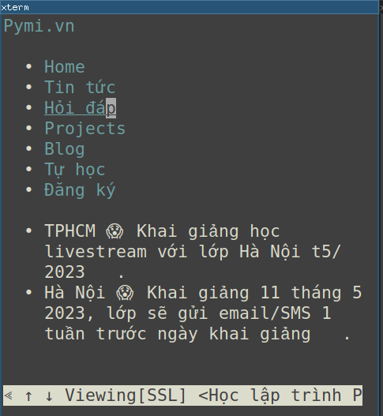

Năm 2023, khi chiếc điện thoại 5 triệu cũng có 4-8GB RAM, laptop 8-16GB, thì lý do gì để không dùng Chrome/Firefox mà dùng một cái trình duyệt trên dòng lệnh?

Hóa ra vẫn có. Chuyện rằng máy có 16GB RAM (onboard VGA), mỗi lần vào combat Dota2 trên steam phải tắt hết các chương trình khác đi để đảm bảo không giật lag, có lần để Firefox rồi chơi, lúc combat 5 đánh 5, giật văng tắt luôn game (OOM, kernel kill).
w3m? mở 1 trang web mất 14MB RAM, so với ít nhất 200-500MB trên Firefox hay Chrome, nên chơi game cũng khỏi cần tắt.
Cài đặt
sudo apt install w3m -y
Sử dụng
w3m URL
w3m ddg.gg
hay mở các tài liệu trên máy (nếu trước đó cài apt install python3-doc)
w3m /usr/share/doc
Mở nhiều trang cùng lúc? cài thêm tmux rồi mở nhiều cửa sổ tmux.
Bạn có biết app Firefox focus trên di động? Tính năng siêu việt của nó là: chỉ mở được 1 tab duy nhất.
Vài phím tắt hữu dụng
- H hiện help
- q tắt
- Tab để di chuyển
- U thanh URL, đổi địa chỉ
- Esc a thêm bookmark
- Esc b hiện bookmark
- B back, trở lại trang trước
Kết luận
w3m không xem được ảnh hay video, không chạy JS, nhưng đủ để đọc tài liệu/chữ. Kèm theo các ưu điểm:
- nhẹ
- không quảng cáo
- không JS, không hack
PS: xem được ảnh nếu cài thêm w3m-img
Hết.
HVN at http://pymi.vn and https://www.familug.org.